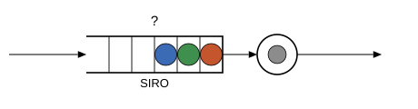
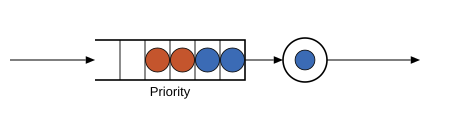

Line disciplines
When the server frees up and several jobs are waiting, someone has to decide who goes next. That rule is the discipline. Concourse ships six, and this page runs the same stream of work through all of them.
The experiment at the bottom of the page needs jobs whose service demands are known when they arrive. So each arriving job is stamped with a size — the exact amount of service it will need — drawn from a uniform distribution. A number stamped on a job is called a mark; marks get their own page. For now: every discipline below sees the identical arrival stream and the identical job sizes, and only the order of service changes.
In the diagrams, jobs are colored by arrival order: blue arrived first, then orange, then green. The head of the line (next to be served) is drawn nearest the server.
FCFS — first come, first served
The default in shops, banks, and fair-minded software: jobs are served in arrival order. The earliest arrival stands at the head.
![](data:image/svg+xml;utf-8,<?xml version="1.0" encoding="UTF-8"?>
<svg xmlns="http://www.w3.org/2000/svg" xmlns:xlink="http://www.w3.org/1999/xlink" width="460" height="120" viewBox="0 0 460 120">
<defs>
<g>
<g id="glyph-374068-0-0">
<path d="M 2.28125 -7.953125 L 2.28125 -4.625 L 7.265625 -4.625 L 7.265625 -3.625 L 2.28125 -3.625 L 2.28125 0 L 1.0625 0 L 1.0625 -8.9375 L 7.421875 -8.9375 L 7.421875 -7.953125 Z M 2.28125 -7.953125 "/>
</g>
<g id="glyph-374068-0-1">
<path d="M 5.03125 -8.09375 C 4.039062 -8.09375 3.269531 -7.769531 2.71875 -7.125 C 2.164062 -6.488281 1.890625 -5.617188 1.890625 -4.515625 C 1.890625 -3.421875 2.175781 -2.539062 2.75 -1.875 C 3.320312 -1.207031 4.097656 -0.875 5.078125 -0.875 C 6.328125 -0.875 7.269531 -1.492188 7.90625 -2.734375 L 8.890625 -2.234375 C 8.523438 -1.460938 8.007812 -0.875 7.34375 -0.46875 C 6.675781 -0.0703125 5.898438 0.125 5.015625 0.125 C 4.117188 0.125 3.335938 -0.0625 2.671875 -0.4375 C 2.015625 -0.8125 1.515625 -1.34375 1.171875 -2.03125 C 0.828125 -2.726562 0.65625 -3.554688 0.65625 -4.515625 C 0.65625 -5.941406 1.039062 -7.054688 1.8125 -7.859375 C 2.582031 -8.671875 3.648438 -9.078125 5.015625 -9.078125 C 5.960938 -9.078125 6.753906 -8.890625 7.390625 -8.515625 C 8.035156 -8.140625 8.507812 -7.585938 8.8125 -6.859375 L 7.65625 -6.484375 C 7.445312 -7.003906 7.113281 -7.398438 6.65625 -7.671875 C 6.195312 -7.953125 5.65625 -8.09375 5.03125 -8.09375 Z M 5.03125 -8.09375 "/>
</g>
<g id="glyph-374068-0-2">
<path d="M 8.078125 -2.46875 C 8.078125 -1.644531 7.753906 -1.003906 7.109375 -0.546875 C 6.460938 -0.0976562 5.550781 0.125 4.375 0.125 C 2.195312 0.125 0.9375 -0.628906 0.59375 -2.140625 L 1.765625 -2.375 C 1.898438 -1.84375 2.1875 -1.445312 2.625 -1.1875 C 3.0625 -0.9375 3.660156 -0.8125 4.421875 -0.8125 C 5.203125 -0.8125 5.804688 -0.945312 6.234375 -1.21875 C 6.660156 -1.488281 6.875 -1.882812 6.875 -2.40625 C 6.875 -2.695312 6.804688 -2.929688 6.671875 -3.109375 C 6.535156 -3.296875 6.347656 -3.445312 6.109375 -3.5625 C 5.867188 -3.6875 5.582031 -3.785156 5.25 -3.859375 C 4.914062 -3.941406 4.546875 -4.03125 4.140625 -4.125 C 3.429688 -4.28125 2.894531 -4.4375 2.53125 -4.59375 C 2.164062 -4.75 1.875 -4.921875 1.65625 -5.109375 C 1.445312 -5.304688 1.285156 -5.535156 1.171875 -5.796875 C 1.066406 -6.054688 1.015625 -6.351562 1.015625 -6.6875 C 1.015625 -7.445312 1.304688 -8.035156 1.890625 -8.453125 C 2.472656 -8.867188 3.3125 -9.078125 4.40625 -9.078125 C 5.414062 -9.078125 6.191406 -8.921875 6.734375 -8.609375 C 7.273438 -8.296875 7.648438 -7.765625 7.859375 -7.015625 L 6.671875 -6.8125 C 6.535156 -7.28125 6.285156 -7.617188 5.921875 -7.828125 C 5.554688 -8.046875 5.046875 -8.15625 4.390625 -8.15625 C 3.671875 -8.15625 3.125 -8.035156 2.75 -7.796875 C 2.375 -7.566406 2.1875 -7.21875 2.1875 -6.75 C 2.1875 -6.46875 2.257812 -6.238281 2.40625 -6.0625 C 2.550781 -5.882812 2.757812 -5.734375 3.03125 -5.609375 C 3.3125 -5.484375 3.863281 -5.328125 4.6875 -5.140625 C 4.957031 -5.078125 5.226562 -5.015625 5.5 -4.953125 C 5.78125 -4.890625 6.046875 -4.8125 6.296875 -4.71875 C 6.546875 -4.625 6.773438 -4.515625 6.984375 -4.390625 C 7.203125 -4.273438 7.390625 -4.128906 7.546875 -3.953125 C 7.710938 -3.773438 7.84375 -3.5625 7.9375 -3.3125 C 8.03125 -3.070312 8.078125 -2.789062 8.078125 -2.46875 Z M 8.078125 -2.46875 "/>
</g>
</g>
</defs>
<rect x="-46" y="-12" width="552" height="144" fill="rgb(100%25, 100%25, 100%25)" fill-opacity="1"/>
<path fill="none" stroke-width="1.6" stroke-linecap="butt" stroke-linejoin="miter" stroke="rgb(0%25, 0%25, 0%25)" stroke-opacity="1" stroke-miterlimit="10" d="M 95 40 L 245 40 L 245 80 L 95 80 "/>
<path fill="none" stroke-width="0.9" stroke-linecap="butt" stroke-linejoin="miter" stroke="rgb(0%25, 0%25, 0%25)" stroke-opacity="1" stroke-miterlimit="10" d="M 220 40 L 220 80 "/>
<path fill="none" stroke-width="0.9" stroke-linecap="butt" stroke-linejoin="miter" stroke="rgb(0%25, 0%25, 0%25)" stroke-opacity="1" stroke-miterlimit="10" d="M 195 40 L 195 80 "/>
<path fill="none" stroke-width="0.9" stroke-linecap="butt" stroke-linejoin="miter" stroke="rgb(0%25, 0%25, 0%25)" stroke-opacity="1" stroke-miterlimit="10" d="M 170 40 L 170 80 "/>
<path fill="none" stroke-width="0.9" stroke-linecap="butt" stroke-linejoin="miter" stroke="rgb(0%25, 0%25, 0%25)" stroke-opacity="1" stroke-miterlimit="10" d="M 145 40 L 145 80 "/>
<path fill="none" stroke-width="0.9" stroke-linecap="butt" stroke-linejoin="miter" stroke="rgb(0%25, 0%25, 0%25)" stroke-opacity="1" stroke-miterlimit="10" d="M 120 40 L 120 80 "/>
<path fill-rule="nonzero" fill="rgb(23.137255%25, 41.960784%25, 70.980392%25)" fill-opacity="1" stroke-width="0.8" stroke-linecap="butt" stroke-linejoin="miter" stroke="rgb(0%25, 0%25, 0%25)" stroke-opacity="1" stroke-miterlimit="10" d="M 244.5 60 C 244.5 66.628906 239.128906 72 232.5 72 C 225.871094 72 220.5 66.628906 220.5 60 C 220.5 53.371094 225.871094 48 232.5 48 C 239.128906 48 244.5 53.371094 244.5 60 Z M 244.5 60 "/>
<path fill-rule="nonzero" fill="rgb(76.862745%25, 33.333333%25, 17.647059%25)" fill-opacity="1" stroke-width="0.8" stroke-linecap="butt" stroke-linejoin="miter" stroke="rgb(0%25, 0%25, 0%25)" stroke-opacity="1" stroke-miterlimit="10" d="M 219.5 60 C 219.5 66.628906 214.128906 72 207.5 72 C 200.871094 72 195.5 66.628906 195.5 60 C 195.5 53.371094 200.871094 48 207.5 48 C 214.128906 48 219.5 53.371094 219.5 60 Z M 219.5 60 "/>
<path fill-rule="nonzero" fill="rgb(24.705882%25, 56.078431%25, 30.588235%25)" fill-opacity="1" stroke-width="0.8" stroke-linecap="butt" stroke-linejoin="miter" stroke="rgb(0%25, 0%25, 0%25)" stroke-opacity="1" stroke-miterlimit="10" d="M 194.5 60 C 194.5 66.628906 189.128906 72 182.5 72 C 175.871094 72 170.5 66.628906 170.5 60 C 170.5 53.371094 175.871094 48 182.5 48 C 189.128906 48 194.5 53.371094 194.5 60 Z M 194.5 60 "/>
<g fill="rgb(0%25, 0%25, 0%25)" fill-opacity="1">
<use xlink:href="%23glyph-374068-0-0" x="153.029541" y="96"/>
<use xlink:href="%23glyph-374068-0-1" x="160.970459" y="96"/>
<use xlink:href="%23glyph-374068-0-0" x="170.358643" y="96"/>
<use xlink:href="%23glyph-374068-0-2" x="178.299561" y="96"/>
</g>
<path fill-rule="nonzero" fill="rgb(100%25, 100%25, 100%25)" fill-opacity="1" stroke-width="1.6" stroke-linecap="butt" stroke-linejoin="miter" stroke="rgb(0%25, 0%25, 0%25)" stroke-opacity="1" stroke-miterlimit="10" d="M 327 60 C 327 72.148438 317.148438 82 305 82 C 292.851562 82 283 72.148438 283 60 C 283 47.851562 292.851562 38 305 38 C 317.148438 38 327 47.851562 327 60 Z M 327 60 "/>
<path fill-rule="nonzero" fill="rgb(54.901961%25, 54.901961%25, 54.901961%25)" fill-opacity="1" stroke-width="0.8" stroke-linecap="butt" stroke-linejoin="miter" stroke="rgb(0%25, 0%25, 0%25)" stroke-opacity="1" stroke-miterlimit="10" d="M 314.898438 60 C 314.898438 65.46875 310.46875 69.898438 305 69.898438 C 299.53125 69.898438 295.101562 65.46875 295.101562 60 C 295.101562 54.53125 299.53125 50.101562 305 50.101562 C 310.46875 50.101562 314.898438 54.53125 314.898438 60 Z M 314.898438 60 "/>
<path fill="none" stroke-width="1" stroke-linecap="butt" stroke-linejoin="miter" stroke="rgb(0%25, 0%25, 0%25)" stroke-opacity="1" stroke-miterlimit="10" d="M 10 60 L 85.761719 60 "/>
<path fill-rule="nonzero" fill="rgb(0%25, 0%25, 0%25)" fill-opacity="1" d="M 85.761719 56.171875 L 95 60 L 85.761719 63.828125 "/>
<path fill="none" stroke-width="1" stroke-linecap="butt" stroke-linejoin="miter" stroke="rgb(0%25, 0%25, 0%25)" stroke-opacity="1" stroke-miterlimit="10" d="M 245 60 L 273.761719 60 "/>
<path fill-rule="nonzero" fill="rgb(0%25, 0%25, 0%25)" fill-opacity="1" d="M 273.761719 56.171875 L 283 60 L 273.761719 63.828125 "/>
<path fill="none" stroke-width="1" stroke-linecap="butt" stroke-linejoin="miter" stroke="rgb(0%25, 0%25, 0%25)" stroke-opacity="1" stroke-miterlimit="10" d="M 327 60 L 410.761719 60 "/>
<path fill-rule="nonzero" fill="rgb(0%25, 0%25, 0%25)" fill-opacity="1" d="M 410.761719 56.171875 L 420 60 L 410.761719 63.828125 "/>
</svg>)
LCFS — last come, first served
The newest arrival is served first, like plates in a stack. The blue job that arrived first now waits at the back — and every later arrival cuts ahead of it.
![](data:image/svg+xml;utf-8,<?xml version="1.0" encoding="UTF-8"?>
<svg xmlns="http://www.w3.org/2000/svg" xmlns:xlink="http://www.w3.org/1999/xlink" width="460" height="120" viewBox="0 0 460 120">
<defs>
<g>
<g id="glyph-465825-0-0">
<path d="M 1.0625 0 L 1.0625 -8.9375 L 2.28125 -8.9375 L 2.28125 -0.984375 L 6.796875 -0.984375 L 6.796875 0 Z M 1.0625 0 "/>
</g>
<g id="glyph-465825-0-1">
<path d="M 5.03125 -8.09375 C 4.039062 -8.09375 3.269531 -7.769531 2.71875 -7.125 C 2.164062 -6.488281 1.890625 -5.617188 1.890625 -4.515625 C 1.890625 -3.421875 2.175781 -2.539062 2.75 -1.875 C 3.320312 -1.207031 4.097656 -0.875 5.078125 -0.875 C 6.328125 -0.875 7.269531 -1.492188 7.90625 -2.734375 L 8.890625 -2.234375 C 8.523438 -1.460938 8.007812 -0.875 7.34375 -0.46875 C 6.675781 -0.0703125 5.898438 0.125 5.015625 0.125 C 4.117188 0.125 3.335938 -0.0625 2.671875 -0.4375 C 2.015625 -0.8125 1.515625 -1.34375 1.171875 -2.03125 C 0.828125 -2.726562 0.65625 -3.554688 0.65625 -4.515625 C 0.65625 -5.941406 1.039062 -7.054688 1.8125 -7.859375 C 2.582031 -8.671875 3.648438 -9.078125 5.015625 -9.078125 C 5.960938 -9.078125 6.753906 -8.890625 7.390625 -8.515625 C 8.035156 -8.140625 8.507812 -7.585938 8.8125 -6.859375 L 7.65625 -6.484375 C 7.445312 -7.003906 7.113281 -7.398438 6.65625 -7.671875 C 6.195312 -7.953125 5.65625 -8.09375 5.03125 -8.09375 Z M 5.03125 -8.09375 "/>
</g>
<g id="glyph-465825-0-2">
<path d="M 2.28125 -7.953125 L 2.28125 -4.625 L 7.265625 -4.625 L 7.265625 -3.625 L 2.28125 -3.625 L 2.28125 0 L 1.0625 0 L 1.0625 -8.9375 L 7.421875 -8.9375 L 7.421875 -7.953125 Z M 2.28125 -7.953125 "/>
</g>
<g id="glyph-465825-0-3">
<path d="M 8.078125 -2.46875 C 8.078125 -1.644531 7.753906 -1.003906 7.109375 -0.546875 C 6.460938 -0.0976562 5.550781 0.125 4.375 0.125 C 2.195312 0.125 0.9375 -0.628906 0.59375 -2.140625 L 1.765625 -2.375 C 1.898438 -1.84375 2.1875 -1.445312 2.625 -1.1875 C 3.0625 -0.9375 3.660156 -0.8125 4.421875 -0.8125 C 5.203125 -0.8125 5.804688 -0.945312 6.234375 -1.21875 C 6.660156 -1.488281 6.875 -1.882812 6.875 -2.40625 C 6.875 -2.695312 6.804688 -2.929688 6.671875 -3.109375 C 6.535156 -3.296875 6.347656 -3.445312 6.109375 -3.5625 C 5.867188 -3.6875 5.582031 -3.785156 5.25 -3.859375 C 4.914062 -3.941406 4.546875 -4.03125 4.140625 -4.125 C 3.429688 -4.28125 2.894531 -4.4375 2.53125 -4.59375 C 2.164062 -4.75 1.875 -4.921875 1.65625 -5.109375 C 1.445312 -5.304688 1.285156 -5.535156 1.171875 -5.796875 C 1.066406 -6.054688 1.015625 -6.351562 1.015625 -6.6875 C 1.015625 -7.445312 1.304688 -8.035156 1.890625 -8.453125 C 2.472656 -8.867188 3.3125 -9.078125 4.40625 -9.078125 C 5.414062 -9.078125 6.191406 -8.921875 6.734375 -8.609375 C 7.273438 -8.296875 7.648438 -7.765625 7.859375 -7.015625 L 6.671875 -6.8125 C 6.535156 -7.28125 6.285156 -7.617188 5.921875 -7.828125 C 5.554688 -8.046875 5.046875 -8.15625 4.390625 -8.15625 C 3.671875 -8.15625 3.125 -8.035156 2.75 -7.796875 C 2.375 -7.566406 2.1875 -7.21875 2.1875 -6.75 C 2.1875 -6.46875 2.257812 -6.238281 2.40625 -6.0625 C 2.550781 -5.882812 2.757812 -5.734375 3.03125 -5.609375 C 3.3125 -5.484375 3.863281 -5.328125 4.6875 -5.140625 C 4.957031 -5.078125 5.226562 -5.015625 5.5 -4.953125 C 5.78125 -4.890625 6.046875 -4.8125 6.296875 -4.71875 C 6.546875 -4.625 6.773438 -4.515625 6.984375 -4.390625 C 7.203125 -4.273438 7.390625 -4.128906 7.546875 -3.953125 C 7.710938 -3.773438 7.84375 -3.5625 7.9375 -3.3125 C 8.03125 -3.070312 8.078125 -2.789062 8.078125 -2.46875 Z M 8.078125 -2.46875 "/>
</g>
</g>
</defs>
<rect x="-46" y="-12" width="552" height="144" fill="rgb(100%25, 100%25, 100%25)" fill-opacity="1"/>
<path fill="none" stroke-width="1.6" stroke-linecap="butt" stroke-linejoin="miter" stroke="rgb(0%25, 0%25, 0%25)" stroke-opacity="1" stroke-miterlimit="10" d="M 95 40 L 245 40 L 245 80 L 95 80 "/>
<path fill="none" stroke-width="0.9" stroke-linecap="butt" stroke-linejoin="miter" stroke="rgb(0%25, 0%25, 0%25)" stroke-opacity="1" stroke-miterlimit="10" d="M 220 40 L 220 80 "/>
<path fill="none" stroke-width="0.9" stroke-linecap="butt" stroke-linejoin="miter" stroke="rgb(0%25, 0%25, 0%25)" stroke-opacity="1" stroke-miterlimit="10" d="M 195 40 L 195 80 "/>
<path fill="none" stroke-width="0.9" stroke-linecap="butt" stroke-linejoin="miter" stroke="rgb(0%25, 0%25, 0%25)" stroke-opacity="1" stroke-miterlimit="10" d="M 170 40 L 170 80 "/>
<path fill="none" stroke-width="0.9" stroke-linecap="butt" stroke-linejoin="miter" stroke="rgb(0%25, 0%25, 0%25)" stroke-opacity="1" stroke-miterlimit="10" d="M 145 40 L 145 80 "/>
<path fill="none" stroke-width="0.9" stroke-linecap="butt" stroke-linejoin="miter" stroke="rgb(0%25, 0%25, 0%25)" stroke-opacity="1" stroke-miterlimit="10" d="M 120 40 L 120 80 "/>
<path fill-rule="nonzero" fill="rgb(24.705882%25, 56.078431%25, 30.588235%25)" fill-opacity="1" stroke-width="0.8" stroke-linecap="butt" stroke-linejoin="miter" stroke="rgb(0%25, 0%25, 0%25)" stroke-opacity="1" stroke-miterlimit="10" d="M 244.5 60 C 244.5 66.628906 239.128906 72 232.5 72 C 225.871094 72 220.5 66.628906 220.5 60 C 220.5 53.371094 225.871094 48 232.5 48 C 239.128906 48 244.5 53.371094 244.5 60 Z M 244.5 60 "/>
<path fill-rule="nonzero" fill="rgb(76.862745%25, 33.333333%25, 17.647059%25)" fill-opacity="1" stroke-width="0.8" stroke-linecap="butt" stroke-linejoin="miter" stroke="rgb(0%25, 0%25, 0%25)" stroke-opacity="1" stroke-miterlimit="10" d="M 219.5 60 C 219.5 66.628906 214.128906 72 207.5 72 C 200.871094 72 195.5 66.628906 195.5 60 C 195.5 53.371094 200.871094 48 207.5 48 C 214.128906 48 219.5 53.371094 219.5 60 Z M 219.5 60 "/>
<path fill-rule="nonzero" fill="rgb(23.137255%25, 41.960784%25, 70.980392%25)" fill-opacity="1" stroke-width="0.8" stroke-linecap="butt" stroke-linejoin="miter" stroke="rgb(0%25, 0%25, 0%25)" stroke-opacity="1" stroke-miterlimit="10" d="M 194.5 60 C 194.5 66.628906 189.128906 72 182.5 72 C 175.871094 72 170.5 66.628906 170.5 60 C 170.5 53.371094 175.871094 48 182.5 48 C 189.128906 48 194.5 53.371094 194.5 60 Z M 194.5 60 "/>
<g fill="rgb(0%25, 0%25, 0%25)" fill-opacity="1">
<use xlink:href="%23glyph-465825-0-0" x="153.38501" y="96"/>
<use xlink:href="%23glyph-465825-0-1" x="160.61499" y="96"/>
<use xlink:href="%23glyph-465825-0-2" x="170.003174" y="96"/>
<use xlink:href="%23glyph-465825-0-3" x="177.944092" y="96"/>
</g>
<path fill-rule="nonzero" fill="rgb(100%25, 100%25, 100%25)" fill-opacity="1" stroke-width="1.6" stroke-linecap="butt" stroke-linejoin="miter" stroke="rgb(0%25, 0%25, 0%25)" stroke-opacity="1" stroke-miterlimit="10" d="M 327 60 C 327 72.148438 317.148438 82 305 82 C 292.851562 82 283 72.148438 283 60 C 283 47.851562 292.851562 38 305 38 C 317.148438 38 327 47.851562 327 60 Z M 327 60 "/>
<path fill-rule="nonzero" fill="rgb(54.901961%25, 54.901961%25, 54.901961%25)" fill-opacity="1" stroke-width="0.8" stroke-linecap="butt" stroke-linejoin="miter" stroke="rgb(0%25, 0%25, 0%25)" stroke-opacity="1" stroke-miterlimit="10" d="M 314.898438 60 C 314.898438 65.46875 310.46875 69.898438 305 69.898438 C 299.53125 69.898438 295.101562 65.46875 295.101562 60 C 295.101562 54.53125 299.53125 50.101562 305 50.101562 C 310.46875 50.101562 314.898438 54.53125 314.898438 60 Z M 314.898438 60 "/>
<path fill="none" stroke-width="1" stroke-linecap="butt" stroke-linejoin="miter" stroke="rgb(0%25, 0%25, 0%25)" stroke-opacity="1" stroke-miterlimit="10" d="M 10 60 L 85.761719 60 "/>
<path fill-rule="nonzero" fill="rgb(0%25, 0%25, 0%25)" fill-opacity="1" d="M 85.761719 56.171875 L 95 60 L 85.761719 63.828125 "/>
<path fill="none" stroke-width="1" stroke-linecap="butt" stroke-linejoin="miter" stroke="rgb(0%25, 0%25, 0%25)" stroke-opacity="1" stroke-miterlimit="10" d="M 245 60 L 273.761719 60 "/>
<path fill-rule="nonzero" fill="rgb(0%25, 0%25, 0%25)" fill-opacity="1" d="M 273.761719 56.171875 L 283 60 L 273.761719 63.828125 "/>
<path fill="none" stroke-width="1" stroke-linecap="butt" stroke-linejoin="miter" stroke="rgb(0%25, 0%25, 0%25)" stroke-opacity="1" stroke-miterlimit="10" d="M 327 60 L 410.761719 60 "/>
<path fill-rule="nonzero" fill="rgb(0%25, 0%25, 0%25)" fill-opacity="1" d="M 410.761719 56.171875 L 420 60 L 410.761719 63.828125 "/>
</svg>)
SIRO — service in random order
When the server frees up, it picks a waiting job uniformly at random. Arrival order carries no weight at all.

Priority
Jobs carry a priority key, and the buffer stays sorted by it: lowest key at the head, ties served in arrival order. In the diagram the blue class outranks the orange class, so blues wait at the head regardless of when they arrived. In the experiment below the key is the job's size, which makes this shortest job first: Priority(Mark(:size)). (A preempt = true variant can also evict the job currently in service, with a choice of whether the victim keeps its progress.)

PS — processor sharing
No line at all: every job present is served at once, each at an equal share of the server's speed. With $n$ jobs present, each proceeds at speed $1/n$. This is the classical model of a time-sliced CPU (central processing unit).
![](data:image/svg+xml;utf-8,<?xml version="1.0" encoding="UTF-8"?>
<svg xmlns="http://www.w3.org/2000/svg" xmlns:xlink="http://www.w3.org/1999/xlink" width="460" height="140" viewBox="0 0 460 140">
<defs>
<g>
<g id="glyph-642143-0-0">
<path d="M 7.984375 -6.25 C 7.984375 -5.40625 7.707031 -4.734375 7.15625 -4.234375 C 6.601562 -3.734375 5.851562 -3.484375 4.90625 -3.484375 L 2.28125 -3.484375 L 2.28125 0 L 1.0625 0 L 1.0625 -8.9375 L 4.828125 -8.9375 C 5.828125 -8.9375 6.601562 -8.703125 7.15625 -8.234375 C 7.707031 -7.765625 7.984375 -7.101562 7.984375 -6.25 Z M 6.765625 -6.234375 C 6.765625 -7.390625 6.070312 -7.96875 4.6875 -7.96875 L 2.28125 -7.96875 L 2.28125 -4.4375 L 4.734375 -4.4375 C 6.085938 -4.4375 6.765625 -5.035156 6.765625 -6.234375 Z M 6.765625 -6.234375 "/>
</g>
<g id="glyph-642143-0-1">
<path d="M 8.078125 -2.46875 C 8.078125 -1.644531 7.753906 -1.003906 7.109375 -0.546875 C 6.460938 -0.0976562 5.550781 0.125 4.375 0.125 C 2.195312 0.125 0.9375 -0.628906 0.59375 -2.140625 L 1.765625 -2.375 C 1.898438 -1.84375 2.1875 -1.445312 2.625 -1.1875 C 3.0625 -0.9375 3.660156 -0.8125 4.421875 -0.8125 C 5.203125 -0.8125 5.804688 -0.945312 6.234375 -1.21875 C 6.660156 -1.488281 6.875 -1.882812 6.875 -2.40625 C 6.875 -2.695312 6.804688 -2.929688 6.671875 -3.109375 C 6.535156 -3.296875 6.347656 -3.445312 6.109375 -3.5625 C 5.867188 -3.6875 5.582031 -3.785156 5.25 -3.859375 C 4.914062 -3.941406 4.546875 -4.03125 4.140625 -4.125 C 3.429688 -4.28125 2.894531 -4.4375 2.53125 -4.59375 C 2.164062 -4.75 1.875 -4.921875 1.65625 -5.109375 C 1.445312 -5.304688 1.285156 -5.535156 1.171875 -5.796875 C 1.066406 -6.054688 1.015625 -6.351562 1.015625 -6.6875 C 1.015625 -7.445312 1.304688 -8.035156 1.890625 -8.453125 C 2.472656 -8.867188 3.3125 -9.078125 4.40625 -9.078125 C 5.414062 -9.078125 6.191406 -8.921875 6.734375 -8.609375 C 7.273438 -8.296875 7.648438 -7.765625 7.859375 -7.015625 L 6.671875 -6.8125 C 6.535156 -7.28125 6.285156 -7.617188 5.921875 -7.828125 C 5.554688 -8.046875 5.046875 -8.15625 4.390625 -8.15625 C 3.671875 -8.15625 3.125 -8.035156 2.75 -7.796875 C 2.375 -7.566406 2.1875 -7.21875 2.1875 -6.75 C 2.1875 -6.46875 2.257812 -6.238281 2.40625 -6.0625 C 2.550781 -5.882812 2.757812 -5.734375 3.03125 -5.609375 C 3.3125 -5.484375 3.863281 -5.328125 4.6875 -5.140625 C 4.957031 -5.078125 5.226562 -5.015625 5.5 -4.953125 C 5.78125 -4.890625 6.046875 -4.8125 6.296875 -4.71875 C 6.546875 -4.625 6.773438 -4.515625 6.984375 -4.390625 C 7.203125 -4.273438 7.390625 -4.128906 7.546875 -3.953125 C 7.710938 -3.773438 7.84375 -3.5625 7.9375 -3.3125 C 8.03125 -3.070312 8.078125 -2.789062 8.078125 -2.46875 Z M 8.078125 -2.46875 "/>
</g>
</g>
</defs>
<rect x="-46" y="-14" width="552" height="168" fill="rgb(100%25, 100%25, 100%25)" fill-opacity="1"/>
<path fill-rule="nonzero" fill="rgb(100%25, 100%25, 100%25)" fill-opacity="1" stroke-width="1.6" stroke-linecap="butt" stroke-linejoin="miter" stroke="rgb(0%25, 0%25, 0%25)" stroke-opacity="1" stroke-miterlimit="10" d="M 270 70 C 270 92.089844 252.089844 110 230 110 C 207.910156 110 190 92.089844 190 70 C 190 47.910156 207.910156 30 230 30 C 252.089844 30 270 47.910156 270 70 Z M 270 70 "/>
<path fill-rule="nonzero" fill="rgb(23.137255%25, 41.960784%25, 70.980392%25)" fill-opacity="1" stroke-width="0.8" stroke-linecap="butt" stroke-linejoin="miter" stroke="rgb(0%25, 0%25, 0%25)" stroke-opacity="1" stroke-miterlimit="10" d="M 238.800781 49.199219 C 238.800781 54.058594 234.859375 58 230 58 C 225.140625 58 221.199219 54.058594 221.199219 49.199219 C 221.199219 44.339844 225.140625 40.398438 230 40.398438 C 234.859375 40.398438 238.800781 44.339844 238.800781 49.199219 Z M 238.800781 49.199219 "/>
<path fill-rule="nonzero" fill="rgb(76.862745%25, 33.333333%25, 17.647059%25)" fill-opacity="1" stroke-width="0.8" stroke-linecap="butt" stroke-linejoin="miter" stroke="rgb(0%25, 0%25, 0%25)" stroke-opacity="1" stroke-miterlimit="10" d="M 259.601562 70 C 259.601562 74.859375 255.660156 78.800781 250.800781 78.800781 C 245.941406 78.800781 242 74.859375 242 70 C 242 65.140625 245.941406 61.199219 250.800781 61.199219 C 255.660156 61.199219 259.601562 65.140625 259.601562 70 Z M 259.601562 70 "/>
<path fill-rule="nonzero" fill="rgb(24.705882%25, 56.078431%25, 30.588235%25)" fill-opacity="1" stroke-width="0.8" stroke-linecap="butt" stroke-linejoin="miter" stroke="rgb(0%25, 0%25, 0%25)" stroke-opacity="1" stroke-miterlimit="10" d="M 238.800781 90.800781 C 238.800781 95.660156 234.859375 99.601562 230 99.601562 C 225.140625 99.601562 221.199219 95.660156 221.199219 90.800781 C 221.199219 85.941406 225.140625 82 230 82 C 234.859375 82 238.800781 85.941406 238.800781 90.800781 Z M 238.800781 90.800781 "/>
<path fill-rule="nonzero" fill="rgb(51.764706%25, 33.333333%25, 69.019608%25)" fill-opacity="1" stroke-width="0.8" stroke-linecap="butt" stroke-linejoin="miter" stroke="rgb(0%25, 0%25, 0%25)" stroke-opacity="1" stroke-miterlimit="10" d="M 218 70 C 218 74.859375 214.058594 78.800781 209.199219 78.800781 C 204.339844 78.800781 200.398438 74.859375 200.398438 70 C 200.398438 65.140625 204.339844 61.199219 209.199219 61.199219 C 214.058594 61.199219 218 65.140625 218 70 Z M 218 70 "/>
<g fill="rgb(0%25, 0%25, 0%25)" fill-opacity="1">
<use xlink:href="%23glyph-642143-0-0" x="221.329102" y="126"/>
<use xlink:href="%23glyph-642143-0-1" x="230" y="126"/>
</g>
<path fill="none" stroke-width="1" stroke-linecap="butt" stroke-linejoin="miter" stroke="rgb(0%25, 0%25, 0%25)" stroke-opacity="1" stroke-miterlimit="10" d="M 50 70 L 180.761719 70 "/>
<path fill-rule="nonzero" fill="rgb(0%25, 0%25, 0%25)" fill-opacity="1" d="M 180.761719 66.171875 L 190 70 L 180.761719 73.828125 "/>
<path fill="none" stroke-width="1" stroke-linecap="butt" stroke-linejoin="miter" stroke="rgb(0%25, 0%25, 0%25)" stroke-opacity="1" stroke-miterlimit="10" d="M 270 70 L 400.761719 70 "/>
<path fill-rule="nonzero" fill="rgb(0%25, 0%25, 0%25)" fill-opacity="1" d="M 400.761719 66.171875 L 410 70 L 400.761719 73.828125 "/>
</svg>)
SRPT — shortest remaining processing time
The job with the least work left is served first, and a newly arrived shorter job preempts the one in service (the interrupted job keeps its progress and resumes later). SRPT provably minimizes the average number of jobs in the system. In the diagram the smallest job stands at the head.
![](data:image/svg+xml;utf-8,<?xml version="1.0" encoding="UTF-8"?>
<svg xmlns="http://www.w3.org/2000/svg" xmlns:xlink="http://www.w3.org/1999/xlink" width="460" height="120" viewBox="0 0 460 120">
<defs>
<g>
<g id="glyph-841785-0-0">
<path d="M 8.078125 -2.46875 C 8.078125 -1.644531 7.753906 -1.003906 7.109375 -0.546875 C 6.460938 -0.0976562 5.550781 0.125 4.375 0.125 C 2.195312 0.125 0.9375 -0.628906 0.59375 -2.140625 L 1.765625 -2.375 C 1.898438 -1.84375 2.1875 -1.445312 2.625 -1.1875 C 3.0625 -0.9375 3.660156 -0.8125 4.421875 -0.8125 C 5.203125 -0.8125 5.804688 -0.945312 6.234375 -1.21875 C 6.660156 -1.488281 6.875 -1.882812 6.875 -2.40625 C 6.875 -2.695312 6.804688 -2.929688 6.671875 -3.109375 C 6.535156 -3.296875 6.347656 -3.445312 6.109375 -3.5625 C 5.867188 -3.6875 5.582031 -3.785156 5.25 -3.859375 C 4.914062 -3.941406 4.546875 -4.03125 4.140625 -4.125 C 3.429688 -4.28125 2.894531 -4.4375 2.53125 -4.59375 C 2.164062 -4.75 1.875 -4.921875 1.65625 -5.109375 C 1.445312 -5.304688 1.285156 -5.535156 1.171875 -5.796875 C 1.066406 -6.054688 1.015625 -6.351562 1.015625 -6.6875 C 1.015625 -7.445312 1.304688 -8.035156 1.890625 -8.453125 C 2.472656 -8.867188 3.3125 -9.078125 4.40625 -9.078125 C 5.414062 -9.078125 6.191406 -8.921875 6.734375 -8.609375 C 7.273438 -8.296875 7.648438 -7.765625 7.859375 -7.015625 L 6.671875 -6.8125 C 6.535156 -7.28125 6.285156 -7.617188 5.921875 -7.828125 C 5.554688 -8.046875 5.046875 -8.15625 4.390625 -8.15625 C 3.671875 -8.15625 3.125 -8.035156 2.75 -7.796875 C 2.375 -7.566406 2.1875 -7.21875 2.1875 -6.75 C 2.1875 -6.46875 2.257812 -6.238281 2.40625 -6.0625 C 2.550781 -5.882812 2.757812 -5.734375 3.03125 -5.609375 C 3.3125 -5.484375 3.863281 -5.328125 4.6875 -5.140625 C 4.957031 -5.078125 5.226562 -5.015625 5.5 -4.953125 C 5.78125 -4.890625 6.046875 -4.8125 6.296875 -4.71875 C 6.546875 -4.625 6.773438 -4.515625 6.984375 -4.390625 C 7.203125 -4.273438 7.390625 -4.128906 7.546875 -3.953125 C 7.710938 -3.773438 7.84375 -3.5625 7.9375 -3.3125 C 8.03125 -3.070312 8.078125 -2.789062 8.078125 -2.46875 Z M 8.078125 -2.46875 "/>
</g>
<g id="glyph-841785-0-1">
<path d="M 7.390625 0 L 5.0625 -3.71875 L 2.28125 -3.71875 L 2.28125 0 L 1.0625 0 L 1.0625 -8.9375 L 5.28125 -8.9375 C 6.28125 -8.9375 7.054688 -8.710938 7.609375 -8.265625 C 8.160156 -7.816406 8.4375 -7.191406 8.4375 -6.390625 C 8.4375 -5.722656 8.238281 -5.160156 7.84375 -4.703125 C 7.457031 -4.253906 6.925781 -3.972656 6.25 -3.859375 L 8.78125 0 Z M 7.21875 -6.375 C 7.21875 -6.894531 7.039062 -7.289062 6.6875 -7.5625 C 6.332031 -7.832031 5.820312 -7.96875 5.15625 -7.96875 L 2.28125 -7.96875 L 2.28125 -4.671875 L 5.203125 -4.671875 C 5.835938 -4.671875 6.332031 -4.816406 6.6875 -5.109375 C 7.039062 -5.410156 7.21875 -5.832031 7.21875 -6.375 Z M 7.21875 -6.375 "/>
</g>
<g id="glyph-841785-0-2">
<path d="M 7.984375 -6.25 C 7.984375 -5.40625 7.707031 -4.734375 7.15625 -4.234375 C 6.601562 -3.734375 5.851562 -3.484375 4.90625 -3.484375 L 2.28125 -3.484375 L 2.28125 0 L 1.0625 0 L 1.0625 -8.9375 L 4.828125 -8.9375 C 5.828125 -8.9375 6.601562 -8.703125 7.15625 -8.234375 C 7.707031 -7.765625 7.984375 -7.101562 7.984375 -6.25 Z M 6.765625 -6.234375 C 6.765625 -7.390625 6.070312 -7.96875 4.6875 -7.96875 L 2.28125 -7.96875 L 2.28125 -4.4375 L 4.734375 -4.4375 C 6.085938 -4.4375 6.765625 -5.035156 6.765625 -6.234375 Z M 6.765625 -6.234375 "/>
</g>
<g id="glyph-841785-0-3">
<path d="M 4.578125 -7.953125 L 4.578125 0 L 3.359375 0 L 3.359375 -7.953125 L 0.296875 -7.953125 L 0.296875 -8.9375 L 7.640625 -8.9375 L 7.640625 -7.953125 Z M 4.578125 -7.953125 "/>
</g>
</g>
</defs>
<rect x="-46" y="-12" width="552" height="144" fill="rgb(100%25, 100%25, 100%25)" fill-opacity="1"/>
<path fill="none" stroke-width="1.6" stroke-linecap="butt" stroke-linejoin="miter" stroke="rgb(0%25, 0%25, 0%25)" stroke-opacity="1" stroke-miterlimit="10" d="M 95 40 L 245 40 L 245 80 L 95 80 "/>
<path fill="none" stroke-width="0.9" stroke-linecap="butt" stroke-linejoin="miter" stroke="rgb(0%25, 0%25, 0%25)" stroke-opacity="1" stroke-miterlimit="10" d="M 220 40 L 220 80 "/>
<path fill="none" stroke-width="0.9" stroke-linecap="butt" stroke-linejoin="miter" stroke="rgb(0%25, 0%25, 0%25)" stroke-opacity="1" stroke-miterlimit="10" d="M 195 40 L 195 80 "/>
<path fill="none" stroke-width="0.9" stroke-linecap="butt" stroke-linejoin="miter" stroke="rgb(0%25, 0%25, 0%25)" stroke-opacity="1" stroke-miterlimit="10" d="M 170 40 L 170 80 "/>
<path fill="none" stroke-width="0.9" stroke-linecap="butt" stroke-linejoin="miter" stroke="rgb(0%25, 0%25, 0%25)" stroke-opacity="1" stroke-miterlimit="10" d="M 145 40 L 145 80 "/>
<path fill="none" stroke-width="0.9" stroke-linecap="butt" stroke-linejoin="miter" stroke="rgb(0%25, 0%25, 0%25)" stroke-opacity="1" stroke-miterlimit="10" d="M 120 40 L 120 80 "/>
<path fill-rule="nonzero" fill="rgb(54.901961%25, 54.901961%25, 54.901961%25)" fill-opacity="1" stroke-width="0.8" stroke-linecap="butt" stroke-linejoin="miter" stroke="rgb(0%25, 0%25, 0%25)" stroke-opacity="1" stroke-miterlimit="10" d="M 238.5 60 C 238.5 63.3125 235.8125 66 232.5 66 C 229.1875 66 226.5 63.3125 226.5 60 C 226.5 56.6875 229.1875 54 232.5 54 C 235.8125 54 238.5 56.6875 238.5 60 Z M 238.5 60 "/>
<path fill-rule="nonzero" fill="rgb(54.901961%25, 54.901961%25, 54.901961%25)" fill-opacity="1" stroke-width="0.8" stroke-linecap="butt" stroke-linejoin="miter" stroke="rgb(0%25, 0%25, 0%25)" stroke-opacity="1" stroke-miterlimit="10" d="M 216.5 60 C 216.5 64.96875 212.46875 69 207.5 69 C 202.53125 69 198.5 64.96875 198.5 60 C 198.5 55.03125 202.53125 51 207.5 51 C 212.46875 51 216.5 55.03125 216.5 60 Z M 216.5 60 "/>
<path fill-rule="nonzero" fill="rgb(54.901961%25, 54.901961%25, 54.901961%25)" fill-opacity="1" stroke-width="0.8" stroke-linecap="butt" stroke-linejoin="miter" stroke="rgb(0%25, 0%25, 0%25)" stroke-opacity="1" stroke-miterlimit="10" d="M 194.5 60 C 194.5 66.628906 189.128906 72 182.5 72 C 175.871094 72 170.5 66.628906 170.5 60 C 170.5 53.371094 175.871094 48 182.5 48 C 189.128906 48 194.5 53.371094 194.5 60 Z M 194.5 60 "/>
<g fill="rgb(0%25, 0%25, 0%25)" fill-opacity="1">
<use xlink:href="%23glyph-841785-0-0" x="152.664551" y="96"/>
<use xlink:href="%23glyph-841785-0-1" x="161.335449" y="96"/>
<use xlink:href="%23glyph-841785-0-2" x="170.723633" y="96"/>
<use xlink:href="%23glyph-841785-0-3" x="179.394531" y="96"/>
</g>
<path fill-rule="nonzero" fill="rgb(100%25, 100%25, 100%25)" fill-opacity="1" stroke-width="1.6" stroke-linecap="butt" stroke-linejoin="miter" stroke="rgb(0%25, 0%25, 0%25)" stroke-opacity="1" stroke-miterlimit="10" d="M 327 60 C 327 72.148438 317.148438 82 305 82 C 292.851562 82 283 72.148438 283 60 C 283 47.851562 292.851562 38 305 38 C 317.148438 38 327 47.851562 327 60 Z M 327 60 "/>
<path fill-rule="nonzero" fill="rgb(54.901961%25, 54.901961%25, 54.901961%25)" fill-opacity="1" stroke-width="0.8" stroke-linecap="butt" stroke-linejoin="miter" stroke="rgb(0%25, 0%25, 0%25)" stroke-opacity="1" stroke-miterlimit="10" d="M 314.898438 60 C 314.898438 65.46875 310.46875 69.898438 305 69.898438 C 299.53125 69.898438 295.101562 65.46875 295.101562 60 C 295.101562 54.53125 299.53125 50.101562 305 50.101562 C 310.46875 50.101562 314.898438 54.53125 314.898438 60 Z M 314.898438 60 "/>
<path fill="none" stroke-width="1" stroke-linecap="butt" stroke-linejoin="miter" stroke="rgb(0%25, 0%25, 0%25)" stroke-opacity="1" stroke-miterlimit="10" d="M 10 60 L 85.761719 60 "/>
<path fill-rule="nonzero" fill="rgb(0%25, 0%25, 0%25)" fill-opacity="1" d="M 85.761719 56.171875 L 95 60 L 85.761719 63.828125 "/>
<path fill="none" stroke-width="1" stroke-linecap="butt" stroke-linejoin="miter" stroke="rgb(0%25, 0%25, 0%25)" stroke-opacity="1" stroke-miterlimit="10" d="M 245 60 L 273.761719 60 "/>
<path fill-rule="nonzero" fill="rgb(0%25, 0%25, 0%25)" fill-opacity="1" d="M 273.761719 56.171875 L 283 60 L 273.761719 63.828125 "/>
<path fill="none" stroke-width="1" stroke-linecap="butt" stroke-linejoin="miter" stroke="rgb(0%25, 0%25, 0%25)" stroke-opacity="1" stroke-miterlimit="10" d="M 327 60 L 410.761719 60 "/>
<path fill-rule="nonzero" fill="rgb(0%25, 0%25, 0%25)" fill-opacity="1" d="M 410.761719 56.171875 L 420 60 L 410.761719 63.828125 "/>
</svg>)
Same load, six disciplines
Now the experiment. One station, arrival rate $\lambda = 0.8$, job sizes uniform on $[0.4, 1.6]$ (mean 1), so the utilization is $\rho = 0.8$ in every case. The service law Law(:Dirac, value = Mark(:size)) says "this job's service time is exactly its stamped size". Swapping the discipline is a one-argument change:
using Concourse
function line_model(disc)
net = QueueNetwork(param_names = (:lambda,))
source!(net, :arrive;
interarrival = Law(:Exponential, scale = inv(Param(:lambda))),
mark = MarkLaw(size = Law(:Uniform, a = Const(0.4), b = Const(1.6))))
station!(net, :desk; discipline = disc, servers = 1,
service = Law(:Dirac, value = Mark(:size)))
sink!(net, :done)
route!(net, :arrive, Always(:desk))
route!(net, :desk, Always(:done))
compile(net)
endFor each discipline we run eight independent simulations and measure each job's time in system (also called the sojourn or response time: waiting plus service). A job's clock starts at its arrival event and stops at its service-completion event, both read straight from the record:
using Statistics
function sojourns(rec)
arr = Float64[] # arrival time of job i, in arrival order
dep = Dict{Int,Float64}() # job id => departure time
for (k, t) in zip(rec.key, rec.time)
k[1] == :arrival && push!(arr, t)
k[1] == :service && (dep[Int(k[3])] = t)
end
[dep[j] - arr[j] for j in eachindex(arr) if haskey(dep, j)]
end
disciplines = ["FCFS" => FCFS(),
"LCFS" => LCFS(),
"SIRO" => SIRO(),
"Priority" => Priority(Mark(:size)),
"PS" => ProcessorSharing(),
"SRPT" => SRPT()]
println(rpad("discipline", 11), rpad("mean N", 8), rpad("mean T", 8),
rpad("std T", 8), rpad("T90", 7), "T99")
for (name, disc) in disciplines
md = line_model(disc)
Ts = Float64[]; Ns = Float64[]
for r in 1:8
rec = simulate(md, [0.8], 2000.0; seed = 20 + r)
append!(Ts, sojourns(rec))
push!(Ns, time_average(number_in_system, md, rec))
end
println(rpad(name, 11), rpad(round(mean(Ns), digits = 2), 8),
rpad(round(mean(Ts), digits = 2), 8),
rpad(round(std(Ts), digits = 2), 8),
rpad(round(quantile(Ts, 0.9), digits = 2), 7),
round(quantile(Ts, 0.99), digits = 2))
enddiscipline mean N mean T std T T90 T99
FCFS 2.52 3.14 2.41 6.41 11.27
LCFS 2.53 3.16 6.49 5.6 33.15
SIRO 2.52 3.14 3.53 6.78 17.88
Priority 2.13 2.65 4.47 4.78 22.16
PS 3.87 4.83 4.35 10.6 20.91
SRPT 2.08 2.59 4.7 5.13 22.54How to read the table
FCFS, LCFS, and SIRO agree on the averages. Same mean number in system (mean N), same mean time in system (mean T). That is not luck: none of the three looks at job sizes, all keep the server busy whenever work is waiting, so they do the same total work and — by a law we meet on the next page — must share a mean. For the record, the Pollaczek–Khinchine formula of the M/G/1 page predicts $\text{mean } T = 3.24$ for this load; the measured means sit a few percent under it because a finite run starts empty and never counts the jobs still inside at the end.
But the spread is completely different. Look at std T and the percentile columns (T90 and T99: 90% and 99% of jobs finish within those times). Under FCFS your wait is bounded by the work ahead of you at arrival, so its tail is the shortest. LCFS is sneaky: its T90 is actually better than FCFS — most jobs arrive near the head and are served fast — but its T99 is three times worse, because a job that loses its turn keeps losing it to every later arrival. SIRO sits in between. Same averages, different victims: the number in the system may not care about the discipline, but who waits absolutely does.
Size-aware disciplines beat the average. Priority-by-size and SRPT push small jobs ahead of big ones and cut both the mean and the tail. SRPT is the provable optimum for mean number in system.
PS is not a free lunch. Processor sharing has the worst mean here. Sharing helps short jobs escape behind long ones, but these sizes are nearly uniform — there are no monsters to escape from — and slowing everyone down just makes everyone late. On the M/G/1 page, where service times get a heavy tail, PS will look much better. Which discipline wins depends on the service-time distribution — that is the next two pages' subject.